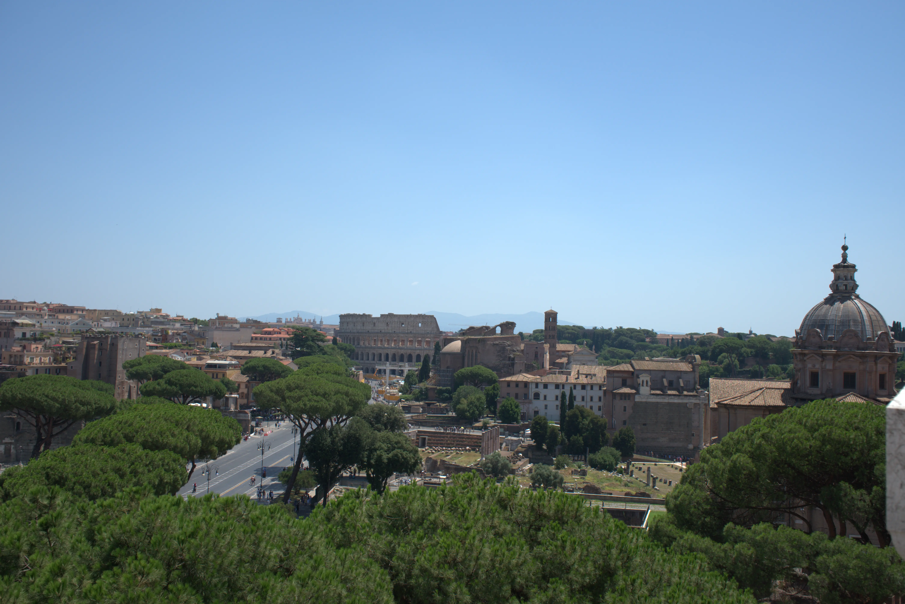
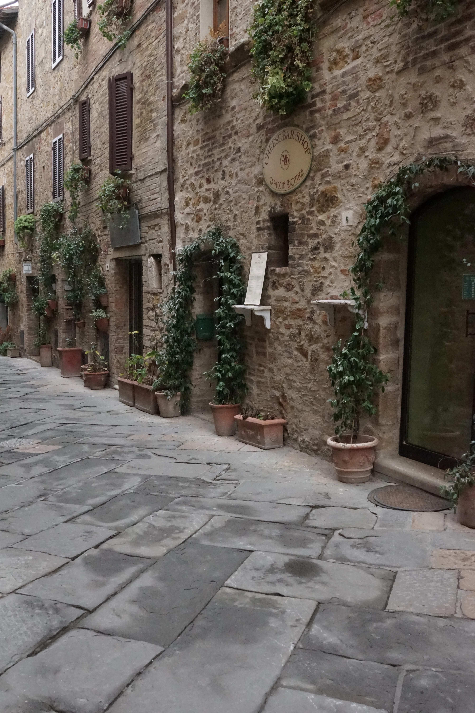
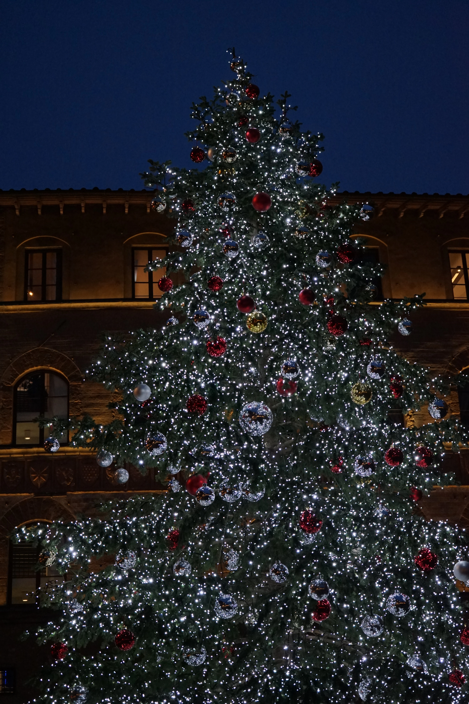
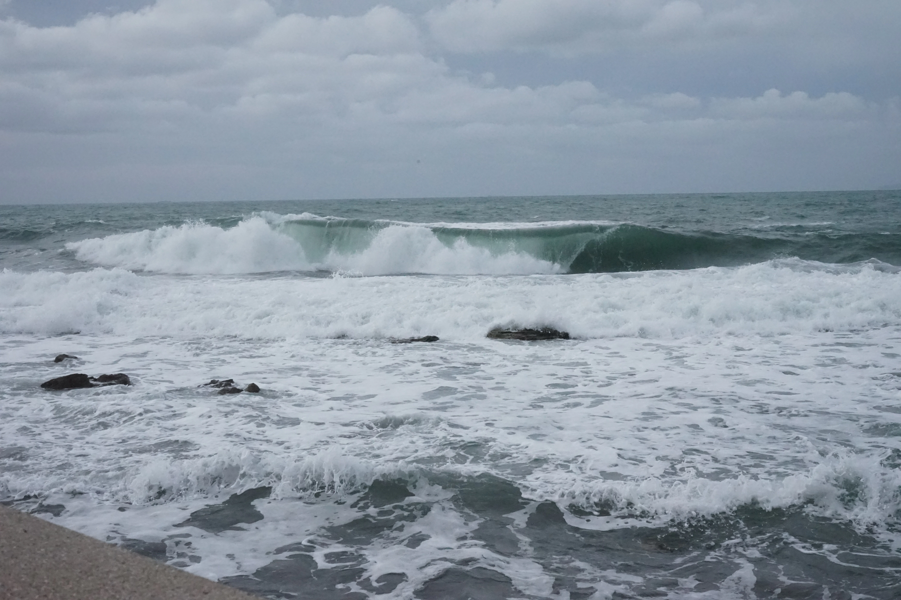
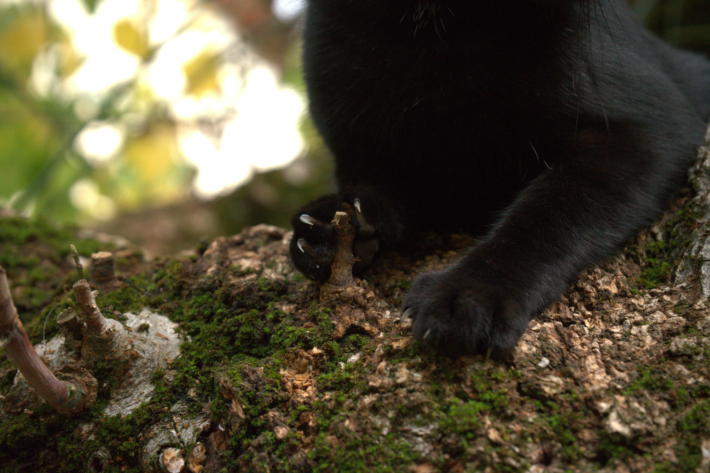
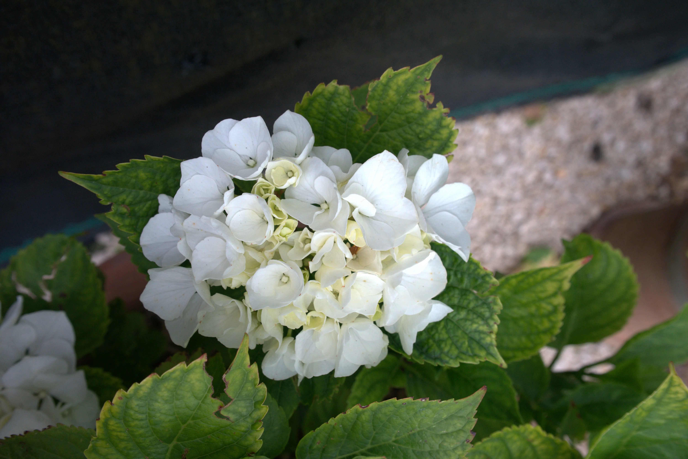
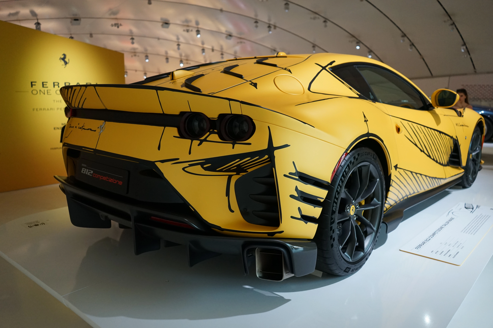
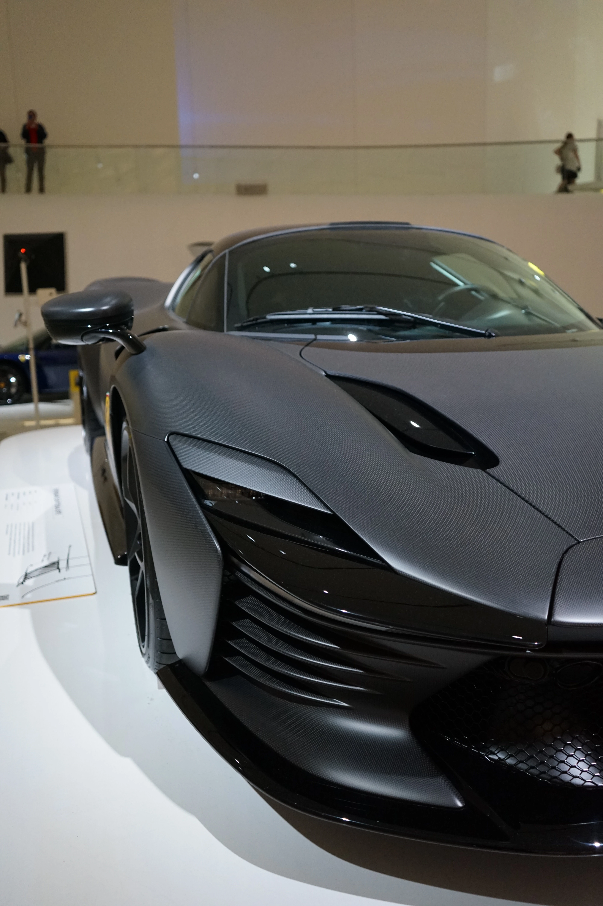
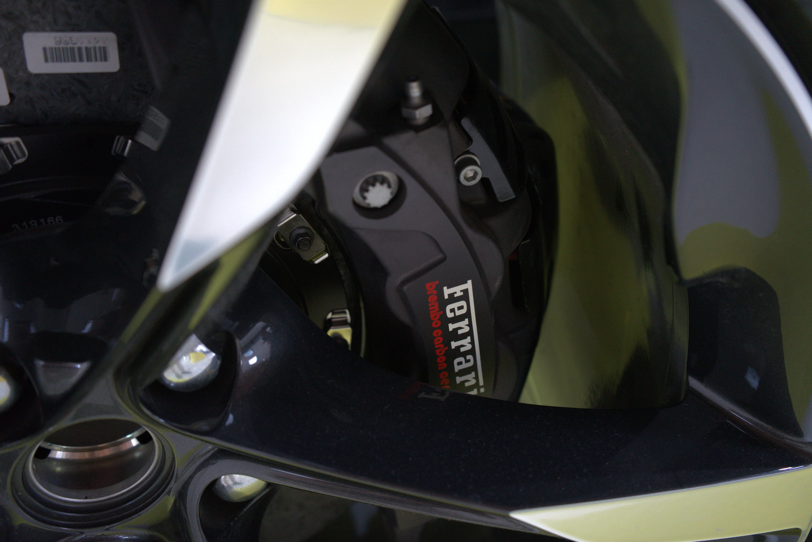
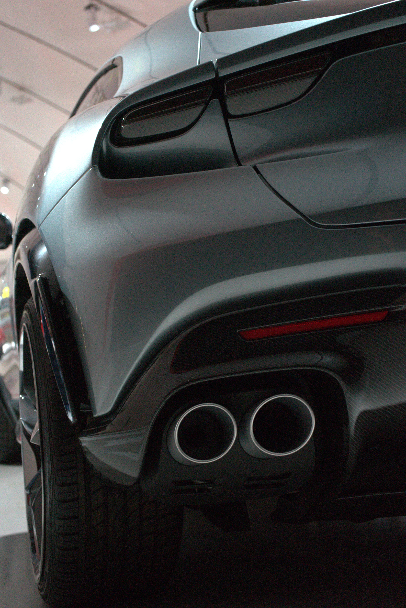

Questa mia passione al dire il vero, nasce grazie alla passione per la telefonia che mi ha fatto avvicinare al mondo della fotografia, insegnandomi molti concetti base. Dopo tanti anni passati ad usare lo smartphone come mezzo principale per scattare fotografie, ho deciso di comprarmi una mirrorless, una sony alpha MK II con obbiettivo base 28-70mm, non è il massimo della qualità ma per impare va più che bene. Sono ancora distante dal poter dire che la so usare in maniera decente, però piano piano sto capendo il funzionamento, nel mentre che me la studio, vi lascio qualche scatto realizzato da me, che spero possa piacervi!

Galleria Fotografica











×